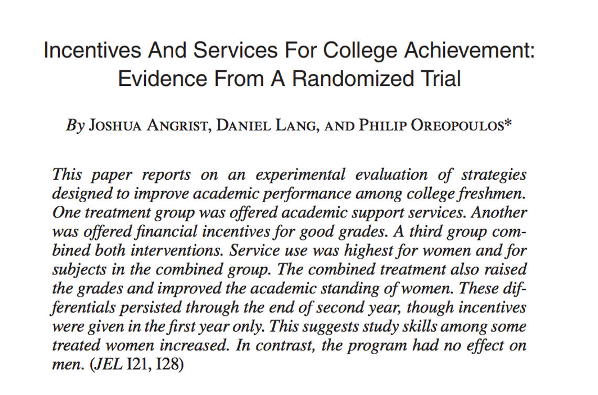

Compare the F-statistic to your critical value from a \(F_{q,n-k_{ur}-1}\) distribution and reject null if \(F>c\) (usually from \(F_{q,\infty}\) distribution)
Extendedxample: The STAR Experiment
Angrist, Lang, and Oreopoulos (2009)

We’re going to think about predictors of year 1 college GPA.
The STAR Experiment: Context
Setting: A satellite campus of a large Canadian university (University of Toronto at Scarborough)
Research question: Can academic support services and financial incentives improve first-year academic performance?
Three treatment groups (randomly assigned):
SSP (Student Support Program): peer advising and facilitated study groups
SFP (Student Fellowship Program): merit-based scholarships for meeting GPA targets
SFSP: combined SSP + SFP treatment
Key findings: The combined program (SFSP) improved grades for women, particularly those with weaker high school backgrounds. Support services alone or financial incentives alone had limited effects.
Our focus today: We’ll use the control variables from this study — gender, mother tongue, and high school quartile — to practice hypothesis testing. This is about the predictors of Year 1 GPA, not the treatment effects.
Recall: The Dummy Variable Trap (Ch6)
When including a categorical variable with \(m\) categories, include \(m - 1\) dummy variables and leave one as the reference group.
In our example:
Mother tongue has 3 categories: English, French, Other
We include mt_french and mt_other; English is the excluded reference group
Coefficients on mt_french and mt_other are interpreted relative to English speakers
Quick Check
If we included all three dummies plus an intercept, what would happen?
We cannot reject the null that French and “Other” speakers have the same GPA (\(p = 0.21\)).
\(F\) vs. \(t\) with One Restriction
With a single restriction, \(F = t^2\), so the \(F\)-test and two-sided \(t\)-test are equivalent. Stata reports \(F\) from the test command.
Why Not Just Test One at a Time?
Are there any differences in GPA by mother tongue?
Tempting approach: Just look at the individual \(t\)-statistics!
\(\hat{\beta}_{french}\): \(t = -1.51\), \(p = 0.131\) → not significant
\(\hat{\beta}_{other}\): \(t = -1.57\), \(p = 0.116\) → not significant
Conclusion: Mother tongue doesn’t matter?
This Is Wrong!
Testing coefficients one at a time and concluding “none are significant, so the group doesn’t matter” is a logical error.
Each individual test has, say, a 5% chance of Type I error. But when you run multiple tests, the probability that at least one falsely rejects grows quickly.
The Multiple Testing Problem
Suppose you test \(q\) hypotheses, each at the 5% level, and all nulls are true.
Probability of not rejecting any single test: \(0.95\)
Probability of not rejecting any of \(q\) independent tests: \(0.95^q\)
Probability of at least one false rejection: \(1 - 0.95^q\)
Number of tests
P(at least one false rejection)
1
5.0%
2
9.8%
5
22.6%
10
40.1%
We need a test that evaluates all restrictions simultaneously: the F-test.
\(n - k_{ur} - 1\) = degrees of freedom in the unrestricted model
\(SSR_r\) = sum of squared residuals from the restricted model
\(SSR_{ur}\) = sum of squared residuals from the unrestricted model
Intuition: The \(F\)-statistic measures the relative increase in SSR when we impose the restrictions. If the null is true, this increase should be small.
Equivalent Formula Using \(R^2\)
Since \(SSR = TSS \cdot (1 - R^2)\) and \(TSS\) is the same in both models:
We cannot reject the null at conventional significance levels.
The mother tongue variables are not jointly significant — we cannot conclude that mother tongue predicts GPA.
In Stata: test and testparm
After the unrestricted regression, Stata can compute the F-test directly:
* Test specific equality restrictionstest mt_french = mt_other = 0* Or equivalently, test joint significance of a grouptestparm mt_french mt_other
Both give: \(F(2, 1368) = 2.28\), \(p = 0.1032\)
Stata Tip
testparm is convenient for testing whether a group of variables is jointly significant — it sets up the \(H_0: \beta_j = 0\) for each variable in the list.
Don’t Forget Heteroskedasticity!
The F-statistic formula using \(SSR\) assumes homoskedasticity.
In practice, always estimate with robust standard errors:
Ch7 (today): The hand-computed \(F\)-statistic formula assumes it
Quick Recap: When Does Homoskedasticity Matter?
Context
Homoskedasticity needed?
OLS point estimates (\(\hat{\beta}\))
No — unbiased either way
OLS is BLUE (most efficient)
Yes — the “B” in BLUE
Homoskedastic-only SEs / F-stats
Yes — wrong if violated
Robust SEs / robust F-stats
No — valid either way
Bottom line: Use robust SEs. Then the only thing you lose when homoskedasticity fails is the guarantee that OLS is the most efficient linear estimator — and that’s usually a small price to pay.
Key Takeaways
Confidence intervals in multiple regression use the same formula as simple regression, but SEs account for other regressors
Individual \(t\)-tests work for single restrictions — but don’t test one at a time when you have a joint hypothesis
The F-test tests multiple restrictions simultaneously, avoiding the multiple testing problem
The overall F-test is reported at the top of every regression — it tests whether all regressors are jointly significant
Always use robust standard errors for heteroskedasticity-robust inference
Knowledge Check
If each of 5 individual \(t\)-tests fails to reject at the 5% level, can you conclude the variables are jointly insignificant? Why or why not?
Tip
Answer: No! The joint F-test could still reject.
Individual insignificance does not imply joint insignificance — this is precisely why we need the F-test.
Appendix: GiveDirectly Kenya Study
GiveDirectly Context: Why Cash Transfers?
The Challenge
700+ million people live on less than $2/day
Traditional Approaches
In-kind aid (food, blankets, etc.)
Conditional cash transfers (CCTs): “We give you money IF you send your kids to school / get vaccinated”
Paternalistic: Government decides what the poor “need”
Unconditional Cash Transfers (UCTs) - Direct, no strings attached - Trusts recipients to make their own decisions - Respects agency and autonomy
Why This Matters
Economic Argument
If markets work, cash is most efficient → recipients choose optimally
But markets often fail in poor areas:
Limited local supply (firms don’t invest)
Prices may spike if aggregate demand increases (inflation)
Spillovers: Money spent in one household affects neighbors
Egger, Haushofer, Miguel, Niehaus, Walker (2022)
An alternative application of hypothesis testing using field experimental data on unconditional cash transfers.
Paper: “General Equilibrium Effects of Cash Transfers: Experimental Evidence from Kenya”
Published in Econometrica 90(6):2603–2643 | 2024 Frisch Medal Winner 🏅
Research Question: What are the direct and general equilibrium effects of unconditional cash transfers?
The Study Design
Study Context
653 villages in rural Kenya (Siaya County)
10,500+ poor households
Cash transfer: ~$1,000 USD (~87,000 KES) per eligible household
Fiscal shock: 15% of local GDP
Randomization Strategy
Village-level: Treatment vs. control villages
Household-level: Eligible vs. ineligible within treatment villages
Eligible (thatched roof means test) → receive transfer
Ineligible (better housing) → NO transfer but exposed to spillovers
Main Findings
Direct Effects (on eligible recipients)
Consumption increased by 1,200-1,800 KES/month (~$12-18/month)
Assets increased substantially
Income effects from local multipliers
Spillover Effects (on ineligible neighbors)
Consumption increased by 500-1,200 KES/month (positive spillovers!)
Local firms benefited from increased demand
Minimal price inflation (no evidence of inflation eroding gains)
Local Fiscal Multiplier: 2.4
For every dollar transferred, local economic activity increased by $2.40
Suggests powerful local demand effects and limited import leakage
Bottom Line: Cash transfers helped both direct recipients AND their neighbors through general equilibrium effects
Regression Framework
Key Variables
treatment = 1 if household in treatment village (any status)
eligible = 1 if household eligible for transfer (means test)
ineligible = 1 if household in treatment village but ineligible